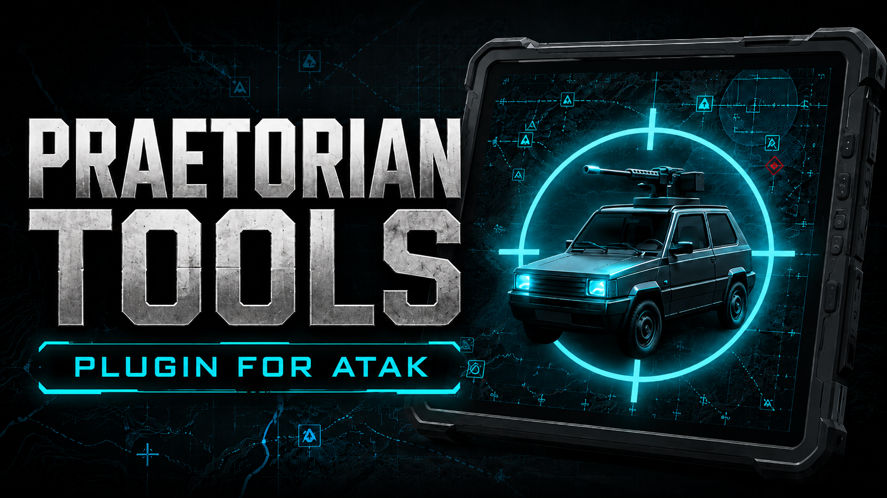

Praetorian Tools.
Built for ATAK.
Extend ATAK with purpose-built capabilities for vehicle-oriented tactical operations and a connected operational picture.

Introducing Praetorian Tools
Tactical vehicle tools, directly inside ATAK.
Praetorian Tools is an ATAK plugin created to bring vehicle-focused command and control capabilities into the TAK ecosystem. It is designed to support operators with a clear, integrated view of vehicles and mission-relevant information in the field.
The project complements Praetorian C2 Vehicle and provides a foundation for closer interoperability between mobile ATAK users and vehicle-based operational environments.
Video introduction
See Praetorian Tools in action.
Watch the official introduction to the ATAK plugin and discover how it supports connected tactical operations.
Source code & download
Follow the project on GitHub.
Visit the official repository for source code, project updates and published releases.